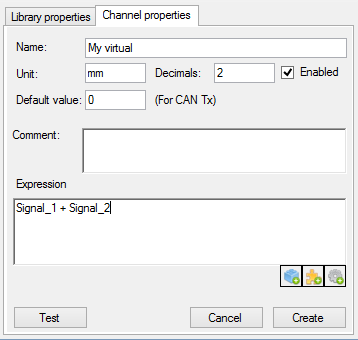

Click on the 'New virtual channel'  button of the tool bar to create a new virtual channels or click on a virtual channel node of the tree view to edit its properties.
button of the tool bar to create a new virtual channels or click on a virtual channel node of the tree view to edit its properties.

A virtual channel has the following properties:
 The string characters of an expression element should not contain any space character !
The string characters of an expression element should not contain any space character !
Space character being an expression element separator, an element containing a space character will be considered as two different elements, leading to a likely wrong result or an expression evaluation error.
There are three buttons at the bottom of the mathematical expression text box  .
.
Those buttons permit to ease and accelerate edition of the virtual channel expression. Click on one of those buttons to open a list containing different items that can be used in the virtual channel expression. Double click an item of list to insert it into the expression.
It is possible to insert three kinds of item
 Virtual channel objects: List of variable (CAN signal, built-in signal, logging channel or another virtual channel).
Virtual channel objects: List of variable (CAN signal, built-in signal, logging channel or another virtual channel).
 Virtual channel functions: List of built-in virtual channel function (abs, cos, sin, ...).
Virtual channel functions: List of built-in virtual channel function (abs, cos, sin, ...).
 Virtual channel operators: List of operators (+, -. *, /).
Virtual channel operators: List of operators (+, -. *, /).

Regarding virtual channel objects, click the 'Load an object file'  button of the tool bar to load an object file and retrieve all names that can be used in a virtual channel expression.
button of the tool bar to load an object file and retrieve all names that can be used in a virtual channel expression.
: For virtual channels functions using multiple arguments, such as IFGT, the argument separator character is ' ; '.
Thus, expression "IFGT(4 ; 2)" will be correctly evaluated while the expression "IFGT(4 , 2)" will lead to a raise of an expression evaluation error.
While writing the virtual channel expression, it is possible to test it by simulating a computation. To do so, click on 'Test'  button.
button.
Check the 'Virtual channel testing' section for more details.
Created with the Personal Edition of HelpNDoc: Free CHM Help documentation generator